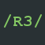

Coltonsr77's Repo
Coltonsr77's
repo.
Add to Cydia
Featured Packages
libcurl4
This is a library for curl. It also simulates an old package that's incompatible only with iOS lower than 7.0.
More info
curl
This is a network tool.
More info